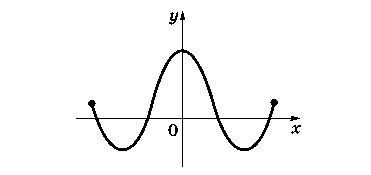

1. Осевая симметрия. Четные функции. Рассмотрим простейший случай, когда график функции y = f(x) симметричен относительно оси ординат. Это означает, что ее область определения D симметрична относительно начала координат (точки x и −x одновременно принадлежат или не принадлежат D) и что f(−x) = f(x), т. е. точки (x, f(x)) и (−x, f(−x)) симметричны относительно оси y.
Функции с такой симметрией графика называются четными функциями.
Четная функция

2. Центральная симметрия. Нечетные функции. Рассмотрим простейший случай, когда график функции y = f(x) симметричен относительно начала координат. Это означает, что ее область определения D симметрична относительно начала координат (точки x и −x одновременно принадлежат или не принадлежат D) и что f(−x) = −f(x), т. е. точки (x, f(x)) и (−x, f(−x)) симметричны относительно точки 0.
Функции с такой симметрией графика называются нечетными функциями.
Четность и нечетность функции может сохраняться при арифметических операциях:
1) сумма четных (нечетных) функций будет четной (нечетной) функцией;
2) произведение двух четных или двух нечетных функций будет четной функцией;
3) произведение четной функции на нечетную будет нечетной функцией
Нечетная функция
3. Симметрия относительно прямой y = x. Графики взаимно-обратных функций. Пусть задана функция y = f(x), имеющая обратную. Напомним, это означает, что из равенства y = f(x) можно x однозначно выразить через y: x = g(y), где g будет функцией, обратной к функции f.
Взаимно-обратные функции (симметрия относительно прямой y = x)
4. Периодичность функции. Самосовмещение при параллельном переносе. О периодических функциях мы говорили в гл. 6 (см. занятие 4) при рассмотрении тригонометрических функций. Напомним определение и основные свойства периодических функций. Функция y = f(x) называется периодической, если существует число T > 0 такое, что выполняется равенство f(x) = f(x + T), верное при всех x.
При этом предполагается, что при всяком допустимом значении x точки x ± T также входят в область определения функции.
Это, в частности, означает, что если T — период функции f, то и числа nT (n — натуральное число) являются ее периодами. Обычно можно выделить наименьший (положительный по определению) период функции, который называют главным, или основным, периодом. Периодическую функцию достаточно исследовать в пределах одного периода. Далее ее свойства будут периодически повторяться. График периодической функции не меняется при параллельном переносе вдоль оси x: x → x + T.
Если T — общий период двух функций, то T остается периодом суммы, произведения и частного этих функций. Сумма периодических функций с разными периодами может быть как периодической, так и не быть таковой.
5. Параллельный перенос графика. Пусть известен график функции y = f(x). Необходимо в этой же системе координат xOy построить график функции y = g(x), где g(x) = = f(x − a) + b. Сделаем параллельный перенос системы координат xOy
Если перенести начало отсчета O в точку O′(a; b), то новые координаты (x′; y′) произвольной точки P будут связаны с прежними ее координатами (x; y) формулами:
Чтобы не ошибиться в знаках, подставьте координаты точки O′. Ее прежние координаты (x; y) должны быть (a; b), а новые (x′; y′) = (0; 0).
Подставим в запись функции g новые переменные x′ и y′, т. е. заменим x = x′ + a, y = y′ + b. Получим y′ = f(x′). Это означает, что график функции y = g(x) в системе координат xOy совпадает с графиком функции y′ = f(x′) в системе координат x′O′y′. Это подсказывает способ построения графика функции y = g(x) — нужно выполнить параллельный перенос системы координат и в новой системе построить известный график функции y = f(x).
В частных случаях, когда a или b равно нулю, происходит перемещение графика вдоль осей координат.
Параллельный перенос графика функции
6. Растяжение графика.Пусть нам известен график функции y = f(x), а мы хотим построить график функции — заданные числа. Это преобразование связано с изменением масштаба, выбранного для осей координат. Введем новые координаты.
Как и в предыдущем случае, видим, что функция y = g(x) при изменении переменных станет функцией y′ = f(x′). Таким образом, для построения графика функции надо изменить масштаб по осям x и y и построить в новой системе координат график функции y = f(x).
В частных случаях, когда k или l равно 1, происходит растяжение (сжатие) вдоль одной из координатных осей
Растяжение графика
7. Симметрия относительно координатных осей. Переход от функции y = f(x) к функции y = f(−x) соответствует симметричному отражению графика относительно оси ординат. Заметим, что функция y = f(−x) может иметь иную область определения, чем функция y = f(x), если область определения функции f не симметрична относительно начала координат.
Аналогично переход от функции y = f(x) к функции y = −f(x) соответствует симметричному отражению графика относительно оси абсцисс, потому что так симметрично расположены точки (x; y) и (x; −y).
Пользуясь тремя типами преобразования графиков — параллельным переносом, растяжением (сжатием) вдоль осей координат и осевой симметрией, можно, исходя из графика функции y = f(x), построить график функции y = kf(l(x − a)) + b при любых значениях параметров a, b, k и l.
Симметрия относительно координатных осей